GDLJS newsletter
Julio-Agosto
Un pequeño resumen de lo que se habla en el canal oficial de #slack de GDLJS, puedes entrar y platicar con la comunidad, hacer preguntas y comandar al @cholobot.
A raíz de la plática de @javierbyte, @greduan comparte un juego diseñado para programadores, donde robots programados por el usuario realizan tareas para cumplir los objetivos de cada stage.
screeps - The world's first MMO strategy open world game for programmers 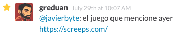@noeldelgado comparte en #demos una compleja animación usando snap.svg, dividida en 2 grandes pasos primero crea los gráficos necesarios usando el wrapper que proveé snap, y luego programa la animación en secuencia.
Aurora - #alonelysquare

Alrededor de la conversación sobre que usamos para deploy @rbdr linkea a hipache, un proxy que ayuda a administrar grandes volúmenes de conexiones HTTP y websocket.
hipache 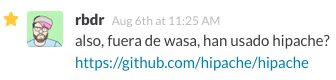 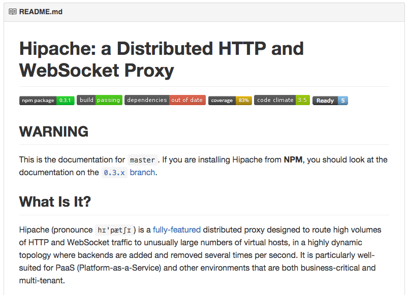Un rato en #general la moda fue Angular vs React y @striwensko aprovechando la ola de love hacia React pasa un talk donde Pete Hunt habla sobre las ideas detrás de la arquitectura de React.
Pete Hunt: Secrets of the virtual DOM 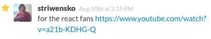
En este mes Facebook liberó la nueva versión de Relay, el mas reciente motor de comunicación server/client para apps escritas con React.
 Getting started with Relay
Getting started with Relay
 Relay Technical Preview
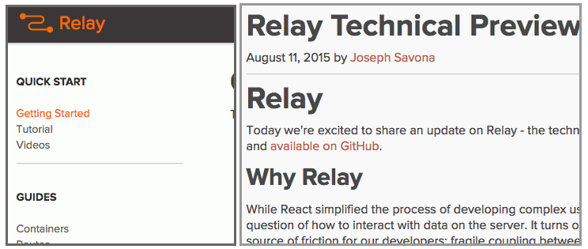
Relay Technical Preview
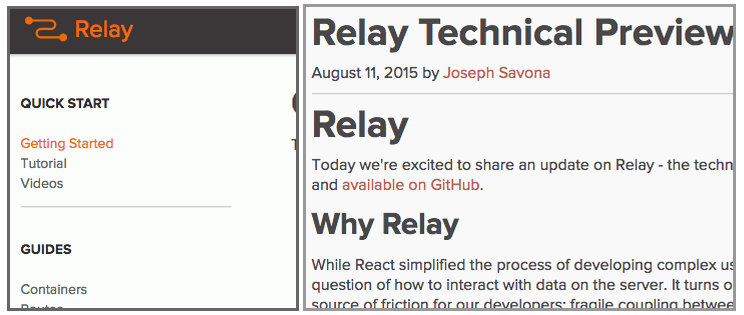
Ya en temas de deploy @rbdr linkea a surge, una plataforma de publicación para contenido estático:
surge - Static web publishing for Front-End Developers 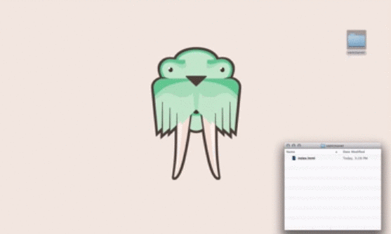
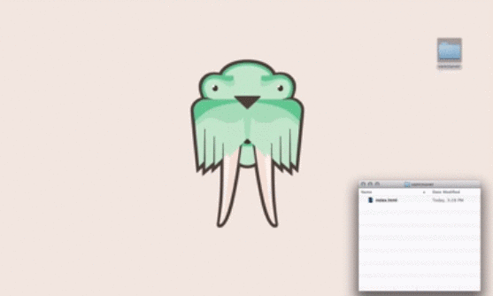
La pasión por React siguío a lo largo de Julio y @joseluistorres posteó un approach de TDD para banda que usa React (TDD drama)
React TDD Guide 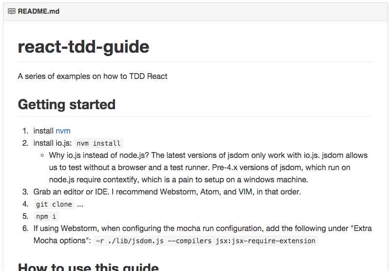@azendal nos compartío un pequeño peek a los resultados de varios experimentos donde developers compitieron en un hackaton con el objetivo de medir el performance de equipos de desarrollo cuando se lleva un proceso formal de desarrollo (entre otras cosas).
 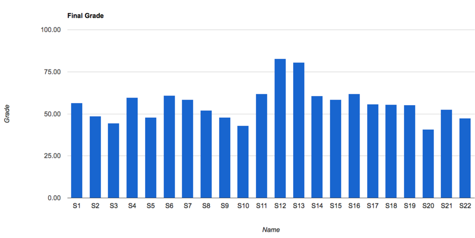
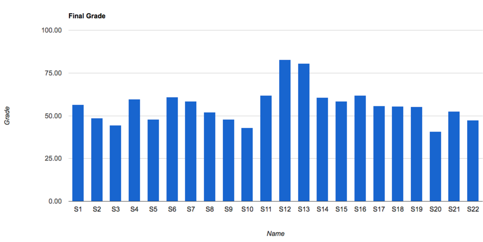


Con Relay en el aire @joseluistorres nos comparte un tut de cómo echar a andar un Server SQL al que podamos consumir con GraphQL.
Building a GraphQL Server with Node.js and SQL 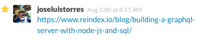
Participando de la controversia sobre el versionado de Node y por que pasa de la 0.12 a la 4.0
4.0 is the new 1.0

@pablasso comparte un talk sobre cómo ocurre el hot-swap de dependencias usando webpack y react.
Hot Reloading with Time Travel 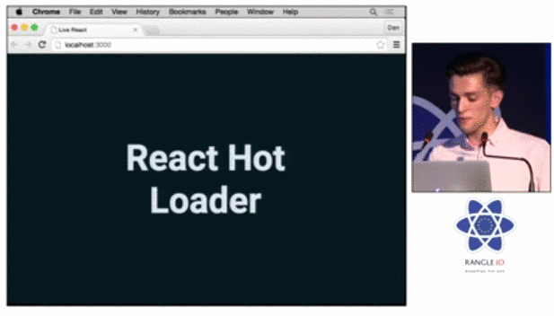
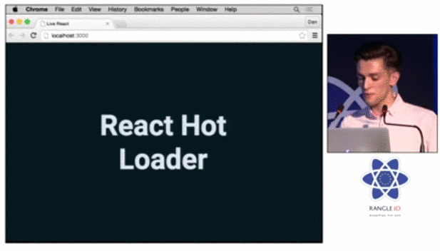
@memorammstein pide feedback sobre su atículo al respecto de cómo aprender Javascript es más fácil si buscas otras personas con las cuales rebotar ideas.
Some thoughts on JavaScript 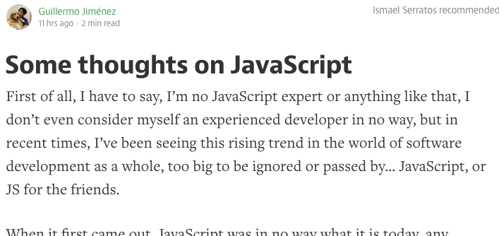
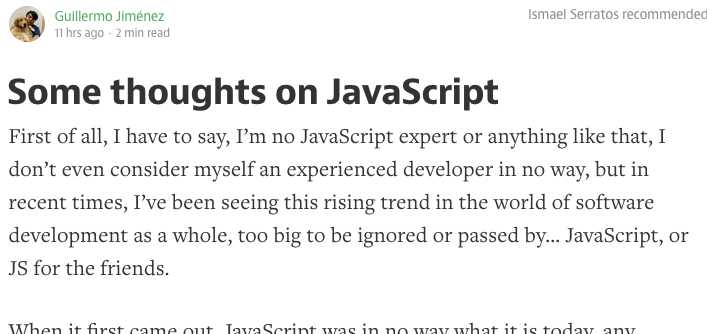
Por último @rbdr nos recuerda lo fácil que es dar una plática en gdljs, si quieren ayudar con la organización de los talks, o involucrarse de alguna otra forma, y cómo pueden hacerlo a travéz de un issue en github.
GDLjs Talks 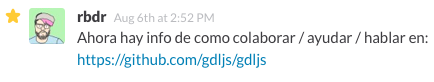 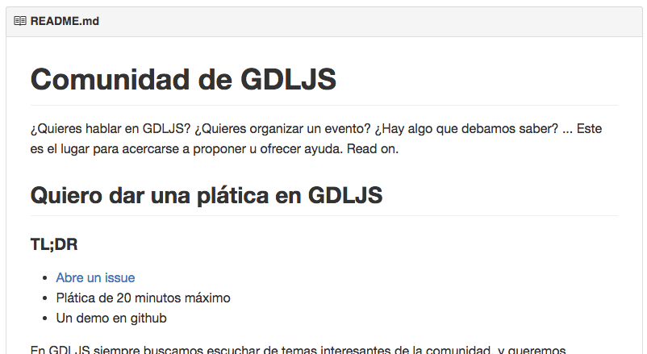